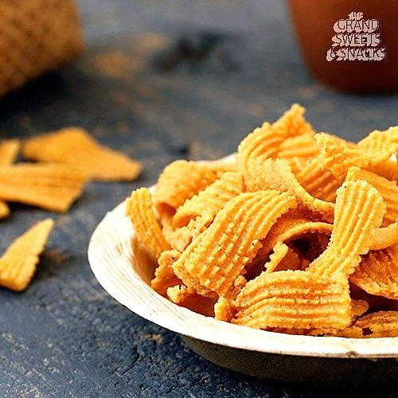

Prep20 min
Cook25 min
Active45 min
Serves20
Difficultyeasy
Contains: milk
Checked against the ingredient list for ten allergens: milk, egg, fish, crustaceans, tree nuts, peanuts, sesame, mustard, soy and gluten. Brands vary, so read the label on anything new to you.
Ingredients
Quantities for 20.
- 200g Besan
- 150g Rice Flour
- 1.5 tsp Chilli Powder
- 1/2 tsp Asafoetida
- 30g Butteror oil, for a vegan version
- as needed Water
- 500ml for deep frying Neutral Oil
- to taste Salt
Cookware
stovetop, kadhai
Before you start
- Also called ola pakoda, after the palm-leaf strips it resembles.
- Press the ribbons directly into the oil in a slow circle so they do not clump.
Method
- Mix the flours, chilli powder, asafoetida and salt. Rub in the butter.
- Add water gradually to a soft dough that will pass through a press without cracking.
- Fit a murukku press with the flat ribbon plate and press directly into medium-hot oil, moving in a circle.Straight into the oil. Pressed onto a sheet first, ribbons stick together.
- Fry until the bubbling slows and the ribbons are golden, about 3 minutes, turning once.
- Drain, cool completely and break into shorter lengths.
Storage
Keeps 3 weeks in an airtight tin at room temperature.
Nutrition Good estimate
Low protein: 3 g a serving, 10% of the calories
| Per serving23 g | Per 100 g | |
|---|---|---|
| Calories | 108 kcal | 477 kcal |
| Protein | 2.7 g | 12 g |
| Carbohydrate | 11.9 g | 53 g |
| of which sugars | 1.1 g | 5 g |
| Fibre | 1.3 g | 6 g |
| Fat | 5.5 g | 24 g |
| of which saturated | 1.2 g | 5 g |
| of which unsaturated | 3.9 g | 17 g |
Ingredients given to taste count as zero, so the real figures run a little higher. Nearest database match used for asafoetida. Estimated from raw ingredients using USDA FoodData Central.
Times, yields, allergens and nutrition are guidance. Use your own judgement on doneness and on storing. More in About.